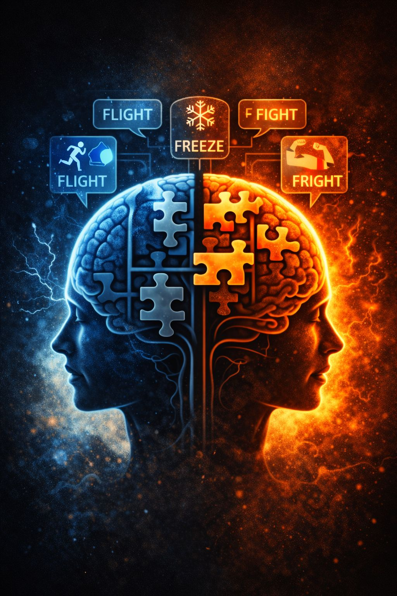

Terror Management Theory (TMT) sits at the center of why symbolic figures become so emotionally powerful.
It begins with a simple but deeply uncomfortable truth:
Human beings know they are going to die.
Psychologists argue that this awareness creates a constant tension inside the mind.
Humans are biologically wired to survive while simultaneously carrying full awareness that survival will eventually fail.
This contradiction produces:
👉 mortality anxiety
An underlying existential pressure that quietly shapes behavior beneath conscious awareness.
In everyday life, most people are not actively thinking about death.
Instead, the mind develops symbolic defenses against mortality awareness.
TMT proposes that humans cope with death anxiety by investing in systems that provide:
These systems include:
Psychologically, these structures help humans feel connected to something larger and longer-lasting than the individual self.
When death feels distant, symbolic systems operate quietly in the background.
But when mortality becomes psychologically activated, the system shifts.
This activation is called:
👉 Mortality Salience
Mortality salience refers to any reminder that life is fragile, temporary, or unstable.
Triggers may include:
Even subtle reminders can activate the system:
Once mortality salience activates, predictable behavioral shifts emerge:
These are not merely intellectual choices.
They are survival-oriented reflexes.
Modern digital life creates near-constant mortality salience.
Every scroll contains reminders of collapse:
Headlines repeatedly communicate the same underlying signal:
“Your world is threatened.”
Under these conditions, humans cling harder to anything that feels psychologically stabilizing.
In periods of instability, symbolic figures become emotionally magnetic.
They do not merely express opinions.
They reduce existential uncertainty.
They convert anxiety into narrative:
“You are under attack.”
“But you are not alone.”
“And we can still win.”
This is psychological alchemy:
🪦 death-awareness
➡️ identity-defense
➡️ loyalty activation
Once identity-defense activates, logic and nuance often become secondary to protection and belonging.
One of the most important insights of TMT is this:
Rejection of unfamiliar ideas is not always rooted in hatred.
Often, it is rooted in fear.
When mortality is psychologically active:
The brain begins treating symbolic threat as literal threat.
A psychological framework explaining how humans cope with awareness of mortality.
The underlying existential fear triggered by awareness of death and impermanence.
Any reminder, subtle or direct, that life is fragile, unstable, or temporary.
TMT does not excuse harmful behavior.
But it helps explain why ordinary people can become psychologically unrecognizable under perceived existential threat.
In a world saturated with doom signals, fear rarely fully shuts off.
And symbolic figures become emotional shields against the terror of being: